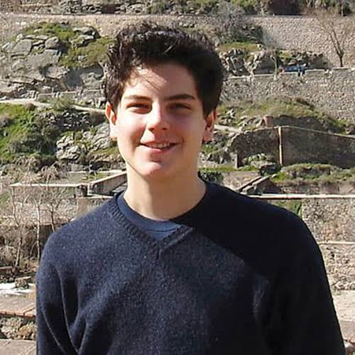

Carlo Acutis nasceu em 3 de maio de 1991, em Londres, mas passou a maior parte de sua vida em Milão, Itália, onde cresceu em uma família católica. Desde pequeno, Carlo demonstrava uma profunda devoção à fé cristã, especialmente à Eucaristia, e tinha uma vida espiritual intensa, buscando a comunhão diária com Deus. Seus pais, embora católicos, não eram particularmente devotos, mas Carlo foi capaz de despertar neles o amor pela fé através de seu exemplo. Ainda muito jovem, Carlo se destacou por sua inteligência e habilidades com a informática. Ele usava seus conhecimentos tecnológicos para criar websites e ferramentas digitais, e seu projeto mais famoso foi um site dedicado a catalogar milagres eucarísticos ao redor do mundo. Com apenas 11 anos, ele já havia demonstrado um talento extraordinário para o mundo digital e, ao mesmo tempo, uma profunda dedicação à Igreja. Apesar de sua juventude, Carlo mostrou uma maturidade espiritual impressionante. Ele era conhecido por sua vida de oração constante e por seu desejo de ajudar os outros. Através de sua amizade com Deus, ele conseguia integrar fé e tecnologia de forma harmoniosa, usando os meios modernos para divulgar a beleza da Eucaristia e a importância da vida cristã. Em 2006, aos 15 anos, Carlo foi diagnosticado com leucemia, uma doença grave que o levou à morte em 12 de outubro do mesmo ano. Mesmo diante do sofrimento, ele manteve uma atitude serena e de total confiança em Deus, dizendo: "A morte não me assusta, pois vou ver o Senhor." Sua morte precoce foi um grande choque para seus familiares e amigos, mas sua vida de santidade e exemplo permanece viva até hoje. Em 2018, Carlo Acutis foi beatificado pela Igreja Católica, tornando-se um exemplo de santidade moderna e uma inspiração para jovens e adultos de todo o mundo.
